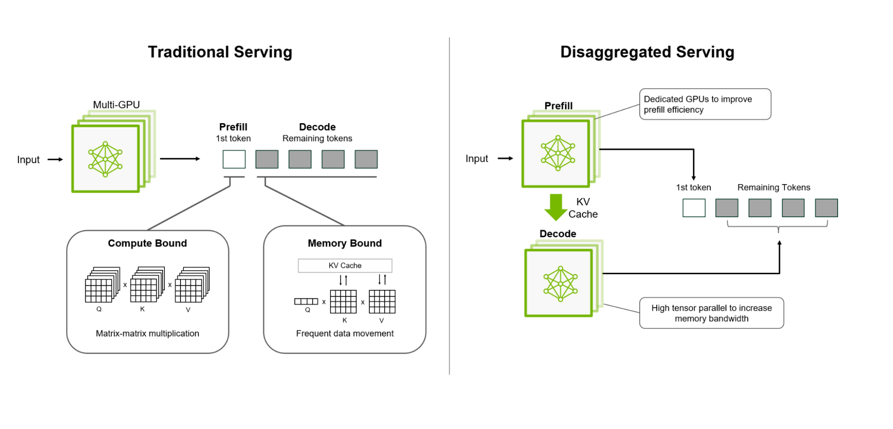

Disaggregated Inference #
In the previous section, we explored chunked prefill as a practical solution to the scheduling tension between prefill and decode phases. By breaking long prefill operations into smaller chunks, chunked prefill enables interleaving with decode steps, improving system stability and fairness. However, this approach still operates within a fundamental constraint: both prefill and decode must share the same GPU resources, creating an inherent tradeoff between prefill efficiency and decode responsiveness.
Disaggregated Inference [1] represents a paradigm shift that eliminates this constraint by physically separating prefill and decode execution onto different devices or specialized hardware tiers. This architectural separation allows each phase to be optimized independently, unlocking new opportunities for performance and efficiency that are impossible in unified systems.
In this section, we examine why disaggregation is necessary, how it works, and the benefits and challenges it introduces.
The Fundamental Tension: Why Separation Matters #
As we’ve seen throughout this section, LLM inference consists of two distinct phases with fundamentally different characteristics:
Prefill Phase #
- Compute-bound: Requires large matrix multiplications over the entire input sequence
- Memory-intensive: Generates large intermediate activations and attention matrices
- Batch-friendly: Benefits from processing multiple long sequences together
- Throughput-optimized: Best performance comes from saturating the GPU with large, uninterrupted workloads
Decode Phase #
- Memory-bandwidth-bound: Small per-token computation, limited by KV cache access
- Latency-sensitive: Users expect low inter-token latency for interactive applications
- Dynamic batching: Requires fine-grained scheduling to handle variable-length sequences
- Responsiveness-optimized: Best performance comes from frequent, small scheduling opportunities
When both phases run on the same GPU, they compete for resources in ways that create unavoidable tradeoffs:
Any improvement to decode responsiveness (e.g., smaller chunk sizes in chunked prefill)
comes at the expense of prefill efficiency, and vice versa.
This tension becomes more severe as:
- Context lengths grow: Longer prompts make prefill more expensive and disruptive
- Concurrency increases: More concurrent requests amplify scheduling conflicts
- Workload diversity increases: Mixing short and long prompts creates unpredictable interference
Disaggregated Inference: The Key Idea #
Disaggregated inference addresses this tension by recognizing that prefill and decode have different resource requirements and should be optimized separately:
Execute prefill and decode on separate devices or hardware tiers, allowing each
to be optimized for its specific workload characteristics.
This separation enables:
- Independent optimization: Prefill devices can prioritize compute throughput; decode devices can prioritize memory bandwidth and low latency
- Specialized hardware: Different device types (e.g., high-compute GPUs for prefill, memory-optimized GPUs for decode) can be selected for each phase
- Better resource utilization: Each device type operates at peak efficiency for its intended workload
- Improved isolation: Long prefill operations no longer block decode requests
How Disaggregated Inference Works #

Disaggregated serving separates prefill and decode on different devices (credits: NVIDIA Dynamo blog)
1. Separate Prefill and Decode Clusters #
The system is divided into two logical clusters:
- Prefill cluster: Dedicated devices optimized for compute-intensive prefill operations
- Decode cluster: Dedicated devices optimized for memory-bandwidth-bound decode operations
Each cluster can have different hardware configurations, scheduling policies, and optimization strategies.
2. Request Lifecycle #
When a new request arrives:
- Prefill execution: The request is routed to a prefill device, where the prompt is processed through the model to generate the initial KV cache
- State transfer: After prefill completes, the KV cache (and any necessary model state) is transferred to a decode device
- Decode execution: The request joins the decode cluster’s continuous batching system, generating tokens one at a time
- Completion: When generation finishes, the decode device releases resources
3. Independent Scheduling #
Each cluster operates its own scheduler optimized for its workload:
- Prefill scheduler: Can batch multiple long prompts together, maximizing GPU utilization without worrying about decode latency
- Decode scheduler: Can prioritize low-latency token generation, using continuous batching without interference from prefill operations
4. Dynamic Load Balancing #
The system must balance load across both clusters:
- Prefill load balancing: Distribute incoming requests across prefill devices based on capacity and current load
- Decode load balancing: Distribute completed prefill requests to decode devices, ensuring decode capacity matches prefill throughput
- Adaptive scaling: Scale each cluster independently based on workload characteristics
Performance Advantages #
Disaggregated inference provides several key benefits over unified systems:
1. Eliminates Scheduling Tension #
By physically separating prefill and decode, the fundamental tradeoff between prefill efficiency and decode responsiveness is eliminated. Each phase can be optimized independently:
- Prefill devices can run large, uninterrupted batches without impacting decode latency
- Decode devices can prioritize low-latency token generation without waiting for prefill operations
2. Enables Specialized Hardware #
Different phases can leverage hardware optimized for their specific needs:
- Prefill devices: High-compute GPUs (e.g., H100, A100) with large memory for processing long sequences
- Decode devices: Memory-bandwidth-optimized GPUs or specialized inference accelerators designed for low-latency, high-throughput token generation
This specialization can significantly improve cost efficiency compared to using general-purpose hardware for both phases.
3. Improves Resource Utilization #
Each device type operates at peak efficiency for its intended workload:
- Prefill devices maintain high compute utilization by batching long prompts
- Decode devices maintain high memory bandwidth utilization through continuous batching of many concurrent requests
This eliminates the efficiency losses that occur when trying to optimize for both workloads simultaneously.
4. Better Performance Isolation #
Long prefill operations no longer block decode requests:
- Users generating long outputs don’t impact interactive users expecting low latency
- System performance becomes more predictable and stable under diverse workload patterns
5. Independent Scaling #
Each cluster can be scaled independently based on workload characteristics:
- High prefill load (e.g., document processing) can scale prefill cluster
- High decode load (e.g., chat applications) can scale decode cluster
- This enables more cost-effective resource allocation
Challenges and Tradeoffs #
While disaggregated inference offers significant benefits, it also introduces new challenges:
1. State Transfer Overhead #
After prefill completes, the KV cache must be transferred from prefill devices to decode devices. This transfer:
- Adds latency: Network transfer time increases time-to-first-token (TTFT)
- Consumes bandwidth: Large KV caches (especially for long contexts) require significant network capacity
- Requires coordination: The system must manage state transfer without blocking either cluster
Optimizations such as compression, pipelining, and efficient serialization can mitigate but not eliminate this overhead.
2. System Complexity #
Disaggregated systems are more complex to design and operate:
- Two-tier scheduling: Must coordinate scheduling across both clusters
- Load balancing: Must balance load across prefill and decode clusters
- Failure handling: Must handle failures in either cluster gracefully
- State management: Must track request state across cluster boundaries
This complexity increases development and operational costs compared to unified systems.
3. Resource Fragmentation #
Separating resources into two clusters can lead to fragmentation:
- Imbalanced load: If prefill and decode workloads are imbalanced, one cluster may be underutilized while the other is overloaded
- Fixed allocation: Resources allocated to one cluster cannot be easily repurposed for the other
Dynamic resource allocation and autoscaling can help, but perfect balance is difficult to achieve.
4. Cost Considerations #
While disaggregation can improve efficiency, it may also increase costs:
- Infrastructure overhead: Managing two clusters requires additional orchestration infrastructure
- Network costs: State transfer consumes network bandwidth, which may be expensive in cloud environments
- Operational complexity: More complex systems require more sophisticated monitoring and management
The cost-benefit tradeoff depends on workload characteristics and scale.
When Disaggregation Makes Sense #
Disaggregated inference is most beneficial when:
- High workload diversity: Systems serving both long-document processing and interactive chat benefit from separation
- Scale: Large-scale deployments can amortize the complexity and overhead across many requests
- Specialized hardware available: Access to different device types optimized for prefill vs. decode
- Strict latency requirements: Applications requiring very low decode latency benefit from eliminating prefill interference
For smaller deployments or homogeneous workloads, the added complexity may not justify the benefits, and unified systems with chunked prefill may be more practical.
Summary #
Disaggregated inference represents a fundamental architectural shift that addresses the inherent tension between prefill and decode phases by physically separating their execution. By allowing each phase to run on specialized hardware optimized for its specific workload characteristics, disaggregated systems can achieve better performance, efficiency, and isolation than unified systems.
However, this separation comes with costs: state transfer overhead, increased system complexity, and potential resource fragmentation. The decision to adopt disaggregated inference depends on workload characteristics, scale, and available infrastructure.
As context lengths continue to grow and workloads become more diverse, disaggregated inference offers a path toward systems that can simultaneously achieve high prefill throughput and low decode latency—goals that are fundamentally at odds in unified architectures.
References #
-
Zhong et al. “DistServe: Disaggregating prefill and decoding for goodput-optimized large language model serving.” 18th USENIX Symposium on Operating Systems Design and Implementation. 2024.
-
NVIDIA Dynamo blog: NVIDIA Dynamo, A Low-Latency Distributed Inference Framework for Scaling Reasoning AI Models, Mar 2025.